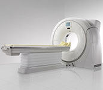

3T, 1.5T Open, 1.5T Closed MRI
Specialized MR Radiologists ACR Accredited in MRI Comfortable & Fast Exam Only High Field Magnet to accommodate obese patients, up to 550 pounds
Specialized Pathology Lab
Quality Pathology Services with Superior Customer Satisfation

The Void Diagnostic Center, provides high-quality, individualized services to special education students, their families and school districts. Services are provided by expert, interdisciplinary teams of diagnostic professionals, including educational specialists, speech/language specialists, secondary specialists, school psychologists, clinical psychologists, and pediatricians. The Void Diagnostic Center, is one of three regional assessment centers operated by the State Special Schools and Services Division of the California Department of Education. The Centers provide assessment, training and technical assistance to all Local Educational Agencies (LEAs) in California. Each of the three Centers serves a specific geographic region in Bangladesh.
Quality Pathology Services with Superior Customer Satisfation
Our Services is with Service Charge
-
Complete Blood Count(CBC) - 400 tk
-
RBS - 150 tk
-
S. Cretinine - 350 tk
-
Lipid Profile - 450 tk
-
Hand X-ray- 200 tk
-
Feet X-ray- 300 tk
-
ECG - 150 tk
-
Echo- 1000 tk
Void Diagnostic Centre has been in existence since 1999. It is approved by concerned authorities like Directorate General of Health Services, Dhaka City Corporation, Ministry of Environment, Ministry of Health and Family Welfare, Bangladesh Atomic Energy Commission.
void Diagnostic Centre prides itself on its commitment to the patients and is constantlystriving to improve diagnostic performance and heightened satisfaction of patients and physicians delight.
Digital single channel 12-lead ECG/EKG machine Electrocardiograph FDA
Digital Single Channel ECG/EKG-100G Electrocardiograph. ECG100G single channel ECG is such a kind of electrocardiograph,which prints out the ECG waveforms with thermal printing system. The G.E. Mac 1200 EKG Machine boasts features that are ideal for hospital, emergency medical, or private practice use.
More DetailsDigital Single Channel ECG/EKG-100G Electrocardiograph
-
Void Diagonistic Center has brought continued innovation to diagnostic cardiology solutions over the years.
-
Today, our commitment to improving ECG analysis and developing new solutions is stronger than ever.
-
Whether you are performing a resting, stress or Holter cardiac examination, our extensive cardiology portfolio provides solutions that help meet your needs for accurate diagnosis and cardiology data management.
-
These impulses can be detected by the ECG machine. You may have an ECG to help find the cause of symptoms such as the feeling of a 'thumping heart'.